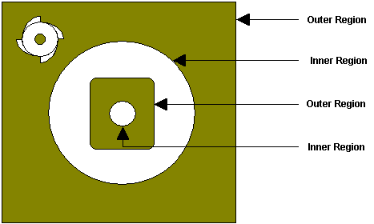

Control Geometry are curves that already exist in your model or separate new curves you create within Rhino that coexist with your part. Regions serve different purposes in 2½, 3 and 4 axis milling.
In 3 axis milling, Containment Regions are used, when necessary, to define the machining boundary. The center of the tool remains on the region while following the contours of the part. For example, if you define a region surrounding one surface, only that surface will be milled.
|
To create regions select the Curve option from the main menu. This will bring up the curve creation tools in Rhino. You will be able to create rectangular, circular and polygonal regions using this toolbar. Regions can also be extracted from the 3D model using the tools available under Curve > Curve From Objects & Curve Edit Tools. |
Multiple and nested regions can be selected, but not regions that intersect. Nested regions are handled according to the following rule: The tool will remain inside an outer region and outside an inner region. A region within an inner region is considered to be an outer region. In the following picture, the shaded areas are where the tool motions occur:  Multiple Regions |
Regions can be deleted by selecting them graphically in the display window or by using Edit > Select Objects tools from the menu bar. To delete the graphically selected regions, select Edit > Cut. You can also hit the Delete key on the keyboard to delete the active selections. |
Also the regions can be edited using any of the Transform commands like Move, Rotate, Scale and Mirror. The transformation can be accessed from the menu bar. The properties of the regions like layer, color can also be edited using the Object Properties option. |